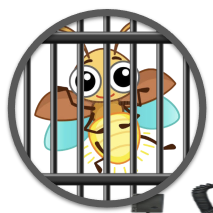

Small + Light = Fireflies!
Fireflies are very efficient small light source (nearly 100% efficiency v.s. 40-50% for LEDs)
The plan is to create small light bulbs using firefly bioluminescence for maximum efficiency
Fireflies do not feel pain (ethical)
Fireflies are biological meaning susceptible to bioengineering
100% Bioluminescence (eco-friendly)